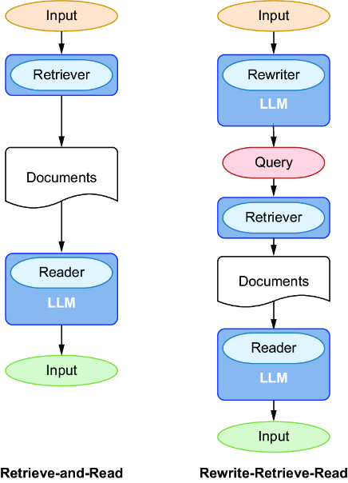
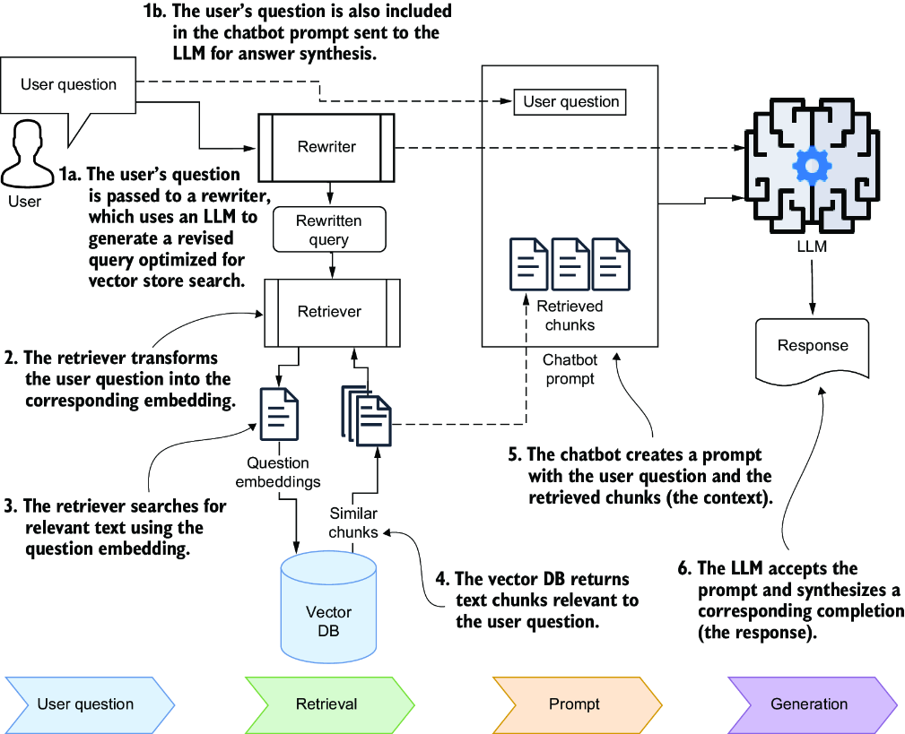
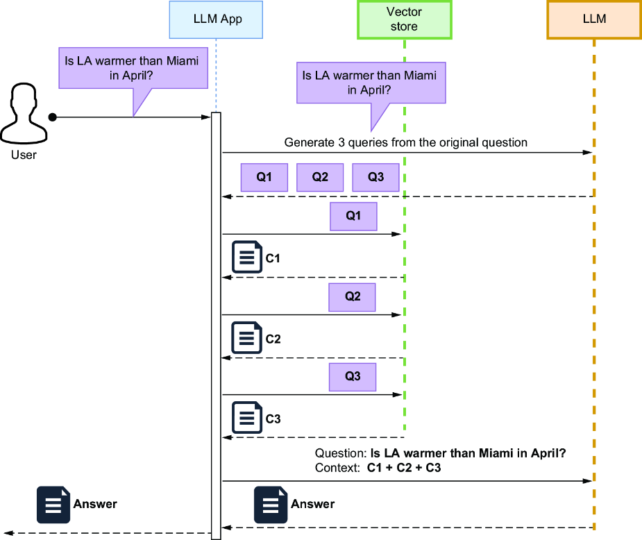
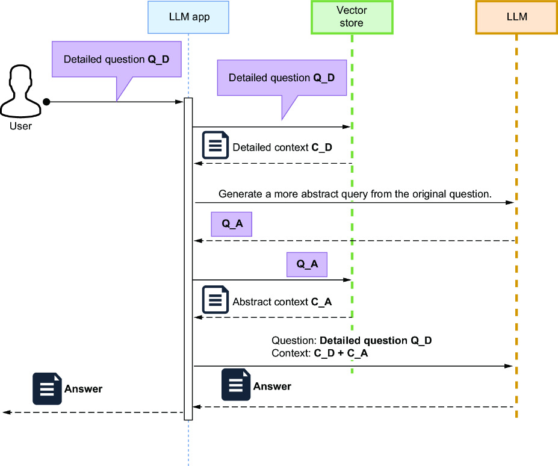
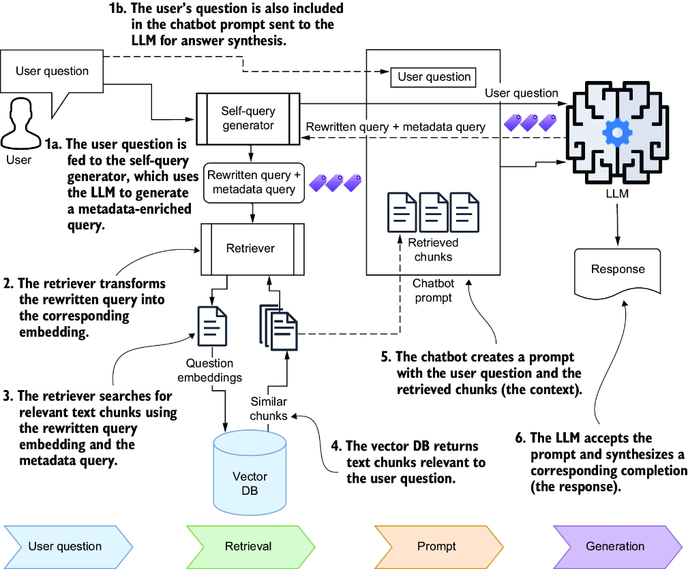
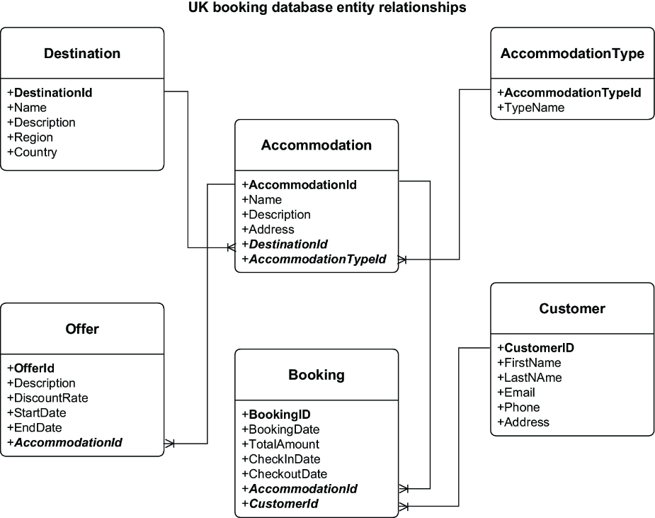
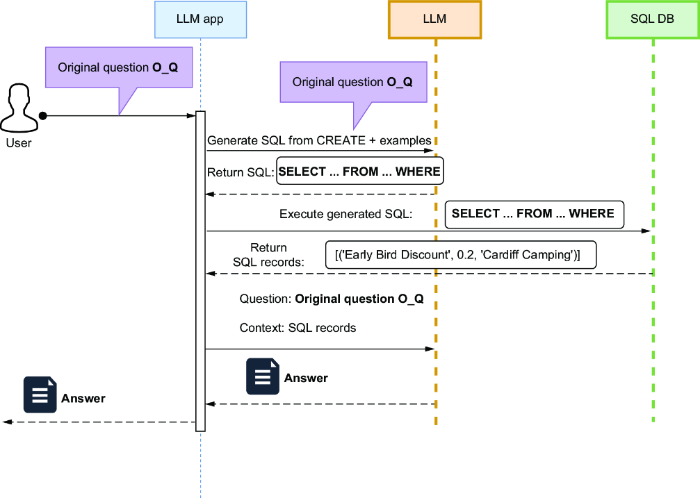

Learning outcomes
- Design smarter indexing pipelines for hierarchical data structures like HTML and Markdown.
- Apply query transformation techniques including rewriting, step-back reasoning, and HyDE.
- Implement intelligent routing between vector databases, SQL systems, and knowledge graphs.
- Optimize retrieval results using post-retrieval reranking and Reciprocal Rank Fusion (RRF).
Topics
Multi-vector retrieval, Context expansion, HyDE, Question decomposition, Intelligent routing, Reranking, RRF, Hybrid search.
1. Evolution to Production-Grade RAG
Production-grade RAG systems must go beyond simple chunking and keyword retrieval to address inconsistent answers caused by vague queries, inadequate indexing, and shallow retrieval logic.
1.1 Engineering Robust Retrieval
Real-world RAG implementation requires a systematic approach to:
- Intelligent Indexing: Designing pipelines that account for document structure and hierarchy.
- Query Refinement: Implementing rewriting and routing to ensure the system surfaces the correct evidence.
- Post-Retrieval Processing: Using reranking to maintain meaningful context for the generator.
1.2 Advanced Strategy Toolkit
A production-ready toolkit includes several advanced methods:
- Structural Awareness: Handling text, HTML, Markdown, and tables through hierarchical indexing.
- Enhanced Context: Using multi-vector retrieval and context expansion to maintain coherence across chunks.
- Intelligent Routing: Navigating between vector databases, SQL systems, and knowledge graphs.
- Fused Retrieval: Merging diverse data sources using techniques like Reciprocal Rank Fusion (RRF).
2. Identifying RAG Accuracy Gaps
Improving accuracy requires analyzing potential failure points in both the Ingestion and Question-Answering workflows.
2.1 Ingestion Stage Challenges
Naive indexing often relies on a single embedding per text chunk, which may fail to capture the full semantic depth needed for precise retrieval.

2.2 Q&A Stage Challenges
Accuracy during the Q&A stage is impacted by how the system interprets user intent and coordinates across content stores.

| RAG Issue | Advanced Solution |
|---|---|
| Inefficient Indexing: Wrong or irrelevant content chunks. | Advanced indexing (Multi-vector, Hierarchical). |
| Vague Queries: Weak semantic matches from user input. | Question transformation and query rewriting. |
| Broad Questions: Ineffective retrieval from abstract queries. | Question decomposition and Step-back reasoning. |
| Siloed Data: Limited relevance in a single vector store. | Intelligent routing to multiple content stores. |
| Unstructured Barriers: Difficulty querying SQL/Graph stores. | Automated LLM-based query generation. |
| Retrieved Noise: Irrelevant results fed to the generator. | Context refinement and post-retrieval reranking. |
3. Advanced Document Indexing Factors
The relevance of retrieved chunks depends on the synergy between splitting and embedding strategies.
- Granularity: Balancing chunk size based on expected query types (detailed vs. broad).
- Multi-Indexing: Using child document embeddings, summaries, or hypothetical questions to capture fine-grained details.
- Sentence Expansion: Providing the LLM with surrounding context sentences during retrieval without losing chunk specificity.
- Hybrid Data Handling: Specialized techniques for retrieving database rows, images, and semi-structured content.
4. Splitting Strategy Implementation
Choosing a splitting strategy is a trade-off between semantic integrity and consistent chunk sizing.
4.1 Chunk Size Impact
Chunk size directly influences the focus and context available to the LLM during generation.

4.2 Technical Strategy Comparison
| Strategy | Pros | Cons | LangChain Classes |
|---|---|---|---|
| Document Hierarchy | Preserves structural semantic meaning. | Variable chunk sizes. |
HTMLHeaderTextSplitter,MarkdownHeaderTextSplitter
|
| Absolute Size (Tokens) | Predictable context window usage. | Potential sentence fragmentation. |
TokenTextSplitter
|
| Absolute Size (Chars) | Simplest implementation. | High risk of breaking semantic flow. |
CharacterTextSplitter
|
| Recursive Semantic | Maintains integrity through logical breaks. | May require fine-tuning of separators. |
RecursiveCharacterTextSplitter
|
4.3 Key Considerations for Splitting
The selection of a splitting strategy depends on several technical factors:
- Document Type: Mixed content (text, tables, images) requires maintaining logical relationships within the same chunk. In these cases, document hierarchy splitting is more effective than fixed-size approaches.
- Search Methodology: Metadata-based searches benefit from specific chunk granularity. Attaching a combination of broad and detailed tags to each chunk increases retrieval flexibility and precision.
4.4 Practical HTML Header Splitting
The following process utilizes content from the Wikivoyage Cornwall page. Figure M4.4 illustrates the results of an automated splitting process using the HTMLHeaderTextSplitter.

4.5 Granular Retrieval Examples
By splitting content into granular chunks, the vector database can pinpoint specific sections of a document. For example, a query regarding "festivals" will retrieve only the relevant text fragments associated with that topic, rather than a coarse chunk containing unrelated information.

4.6 Coarse Chunking with Overlap
An alternative strategy involves using fixed-size "coarse" chunks with a specified overlap. This technique ensures that semantic context is not lost at the boundaries of a chunk, though it introduces some data redundancy.

5. Advanced Embedding Strategies
Multi-vector strategies increase retrieval flexibility and accuracy by storing multiple vectors per document. This approach relies on a decoupled Two-Layer Chunk Architecture that separates the search process from the generation process, addressing the inherent conflict between small chunks (optimized for precise search) and large chunks (optimized for coherent context).
5.1 Two-Layer Architecture and Parent-Child Chunks
A common challenge in RAG is balancing context and detail. Large chunks work well for broad questions but struggle with specific queries. Conversely, small granular chunks support detailed questions but often lack the context needed for comprehensive synthesis. This creates a tradeoff: if chunks are too small, responses may be incomplete; if they are too large, retrieval precision drops.
The Parent-Child strategy solves this by splitting documents into large Synthesis Chunks (Parent) and further dividing them into smaller Retrieval Chunks (Child). The child chunks are used solely for generating precise embeddings, while the parent chunks provide the LLM with full context during generation.

Synergy: When a child retrieval chunk matches a query, the system automatically returns its associated parent synthesis chunk. This hybrid approach allows the model to handle both broad and detailed queries effectively within the same index.
5.2 Embedding Document Summaries
Coarse chunks often contain irrelevant content that dilutes semantic value. By generating and indexing summaries of these chunks using the MultiVectorRetriever, the system can perform more focused searches while still delivering the full chunk for generation.

5.3 Hypothetical Question Embeddings
Retrieval often fails when the user's question phrasing doesn't match the document content. By generating hypothetical questions that a chunk can answer and indexing those questions, the system increases the likelihood of a high-similarity match during query time.

6. Query Transformation Strategies
Even with optimized indexing, RAG systems can fail if the user's initial question is poorly phrased, vague, or overly complex. Query transformation techniques use an LLM to refine or decompose the question before it reaches the retriever, significantly improving the quality of the surfaced context.
6.1 Rewrite-Retrieve-Read
The Rewrite-Retrieve-Read workflow introduces a dedicated "Rewrite" step before the retrieval process. A rewriter (typically an LLM) reformulates the original user question into a clearer, more search-optimized query. This ensures that the vector store receives a targeted input that aligns better with the stored embeddings.

In practice, the rewritten query is used specifically for the vector store lookup, while the original user question is preserved for the final answer synthesis. This combination leverages the optimized search parameters while maintaining the user's original intent.

Reference: This approach is detailed in the research paper "Query Rewriting for Retrieval-Augmented Large Language Models" by Xinbei Ma et al.
6.2 Generating Multiple Queries
If a question is well-formed but contains multiple implicit queries, a single rewrite may not be sufficient. In such cases, the MultiQueryRetriever uses an LLM to break down the original question into several explicit sub-questions. Each sub-query is executed independently, and the results are combined to provide a comprehensive context.

6.3 Step-Back Questioning
Detailed questions can sometimes be too specific, leading to the retrieval of chunks that lack broader context. The Step-Back technique prompts the LLM to generate a more abstract, higher-level question based on the user's detailed query. The system then retrieves both detailed and abstract context to ground the final answer.

Reference: This reasoning technique was developed by Google DeepMind. See "Take a Step Back: Evoking Reasoning via Abstraction in Large Language Models" by Huaixiu Steven Zheng et al.
7. Retrieving from Diverse Content Stores
Production-grade RAG often requires accessing information beyond a single vector store. Advanced systems coordinate between multiple types of databases, using LLMs to bridge the gap between unstructured user questions and the structured queries required by specialized content stores.
7.1 Types of Content Stores
- Vector Stores (Dense & Sparse Retrieval):
- Dense Retrieval: Uses embeddings to capture semantic meaning. Similarity is computed based on the mathematical distance between vectors.
- Sparse Retrieval (Lexical): Based on word-level similarity using inverted indexes (e.g., BM25 or TF-IDF). Excels at precise keyword matches and Boolean logic.
- Relational (SQL) Databases: Stores structured facts in tables. LLMs facilitate retrieval through text-to-SQL, generating structured queries from natural language to access data like seasonal temperatures or inventory lists.
- Document & Key-Value Stores: Databases (e.g., MongoDB) that store data in JSON or BSON formats. LLMs can accurately convert user questions into JSON-based queries that align with the database schema. Many of these have recently added vector search capabilities.
- Knowledge Graphs: Represent data as entities (nodes) and relationships (edges). Knowledge Graph-Enhanced RAG transforms unstructured text into a compact, structured graph, allowing for complex relationship-based querying.
7.2 Self-Querying and Metadata Enrichment
A vector store typically indexes document chunks by embedding for dense search, but it can be significantly enhanced through metadata query enrichment. This technique, known as self-querying, allows the system to filter results based on structured attributes before performing semantic similarity search.

Metadata indexing can be achieved through several methods:
- Explicit Metadata Tags: Manually or programmatically adding attributes such as timestamps, source URLs, and specific topics to each chunk.
- Algorithmic Extraction: Using techniques like TF-IDF or BM25 to automatically identify relevant keywords based on term frequency and importance.
- LLM Suggestions: Leveraging an LLM to generate descriptive tags and summaries during the ingestion phase, creating a richer set of searchable attributes.
Relational Schema Enrichment
Before an LLM can generate accurate SQL, it must understand the underlying database structure. Providing the model with an entity-relationship diagram and schema details (Primary Keys, Foreign Keys) minimizes incorrect column and table references.

UkBooking database: showing tables for destinations, accommodations, and offers, including their primary and foreign key relationships.7.3 Relational Database Querying (Text-to-SQL)
Accessing structured facts stored in relational tables requires converting natural language into structured queries. LLMs facilitate this through text-to-SQL generation, allowing the application to retrieve precise data points like pricing, inventory, or historical records.

LangChain provides specialized tools like the SQLDatabaseChain to automate this process. By providing the LLM with the database schema and sample records, the system can generate accurate queries while minimizing hallucinations of table or column names.
Reference: For insights into optimizing this process, see "Evaluating the Text-to-SQL Capabilities of Large Language Models" by Nitarshan Rajkumar et al.
Guided lab
In this lab, you will explore advanced RAG techniques, focusing on hierarchical indexing, multi-vector strategies, and query transformation orchestration.
Access the practical materials here:
Key takeaways
- Beyond Baseline: Real-world RAG requires solving vague queries and shallow indexing depth.
- Structural Integrity: Using document hierarchy during splitting improves semantic accuracy.
- Multi-Store Orchestration: Effective RAG often requires routing between vector, SQL, and graph databases.
- Traceability: Iterative improvement is impossible without monitoring chain execution (LangSmith).